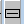
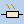
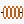
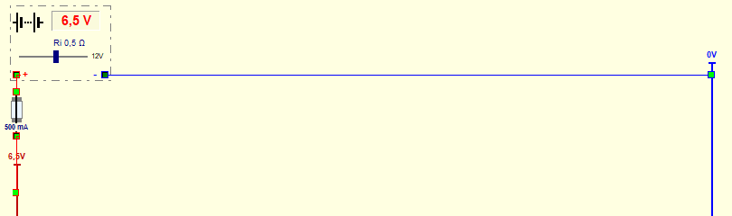

In Logic you build a power circuit: a source (battery) of 0 to 12 V, if you like a fuse and a milliammeter, a red + rail for the inputs and a blue − rail (ground) for the outputs. The gates and the other processing blocks get their power invisibly (see Where are the plus and the minus?). With the voltmeter you measure the voltage.

These buttons are in the Power group of the component bar; the milliammeter and the wattmeter have a button with the outputs, next to the voltmeter.
| Button | Name | What is it? |
|---|---|---|
| + rail (supply) | Red rail for the inputs. The voltage it gets from the source is shown at the top, for example 5V. |
| − rail (ground) | Blue rail with 0V at the top and the ground symbol at the bottom. |
| Source (battery) | Voltage source of 0 to 12 V. |
| AC voltage source | Voltage that changes direction like a sine (slowed down: 0.5 to 2 Hz). |
 | Fuse | Blows when too much current flows. |
| Milliammeter | Measures the current the circuit uses. |
| Wattmeter | Measures the power P = U × I of everything after it. |
| Oscilloscope | Draws the voltage over time, as a green trace. |
| Resistance (contact) | A contact or wire with a small resistance: some voltage is lost. |
| Potentiometer | Resistor with a wiper and three terminals: an adjustable voltage divider. |
 | LDR | Light-dependent resistor: the more light, the lower the resistance. |
| NTC | Temperature-dependent resistor: the warmer, the lower the resistance. |
| Lamp | Lamp with two terminals, for 12 V or 5 V; a 5 V lamp also lights on a gate. Right-click › Colour: red, green or orange. |
| LED with 2 terminals | Conducts in one direction only; goes with a series resistor. |
| Diode | Lets current through in one direction only, above 0.7 V. | |
| Capacitor | Charges and discharges over time. |
| Switch or push button | Switch with two terminals; right-click › Type › Push button makes it a push button. |
| Changeover switch | Three terminals: the middle is connected to A or to B. |
| Pulse generator | Switch that opens and closes by itself: pulses from 0.5 to 5 Hz. |
| DIP switch | Four small switches: a number from 0 to 15 on the outputs 8, 4, 2 and 1. |
| Voltmeter with 2 terminals | Narrow button with a V in a circle. Measures the voltage difference between its two terminals. | |
| Transistor | A small base current controls a large collector current: switching and amplifying. | |
| Buzzer | Buzzer with two terminals: sounds from 10 mA, also on a gate. |
| Relay | Coil with two terminals and a changeover contact (C, NO, NC). |
| Bar magnet | Magnet with a north pole (red) and a south pole (blue), without terminals. |
| Compass | A needle that points along the magnetic field. |
| Field line sheet | Shows the field lines of the magnets lying on it, like iron filings. |
 | Coil | Coil with turns in the circuit: with a current it becomes a magnet. |
| Nail | A piece of iron: a magnet or a coil with a current pulls it. |
| Relay (open model) | A coil on a core, an armature with a spring and three contacts: how a relay works inside. |
| Current swing | A copper rod between the poles of a U-magnet: with a current it swings out (Lorentz force). |
| Electric motor (model) | A coil turning between two poles, with commutator and brushes. |
| Centre-zero meter | Galvanometer with the zero in the middle: shows the current and its direction. |
| Rotating magnet | A strong magnet on an axle, as in a dynamo; click to make it turn. | |
| Transformer | Two coils on an iron core: steps an alternating voltage up or down. |
You may place as many rails as you like, for example a separate rail for each part of the circuit.
The rails get their voltage only from a source. Connect with
 Connection:
Connection:
Put a fuse and a milliammeter in series in the + wire: from the source to the top terminal of the fuse, and from its bottom terminal on to the meter or to the + rail.
When the circuit is closed, the voltage of the source is on the + rail. When it is not closed (a wire is missing or the fuse has blown), the + rail is at 0 V: the inputs give no signal and the outputs do not work.
The source (battery)
Every load that is on behaves like a fixed resistor. At 12 V it draws:
| Load (on) | Current at 12 V |
|---|---|
| lamp (120 Ω) | 100 mA |
| motor (running) | 200 mA |
| relay with two terminals (coil of 60 Ω) | 200 mA |
| buzzer with two terminals (200 Ω) | 60 mA |
| person (per input that is on) | 20 mA |
| 7-segment display | 10 mA per lit segment |
| gate, counter, memory, LogicRun, plugged-in input | 1 mA |
| in old panels, without terminals: relay or switching relay, buzzer, coloured LED | 40 mA, 30 mA, 20 mA |
At a lower voltage the current is proportionally smaller: a lamp draws 50 mA at 6 V. The current of the source is the sum of all loads together. With the internal resistance Ri of the source this becomes:
I = E / (Ri + R) and U = E − I × Ri
R is the resistance of all loads together (in parallel). The more loads are on, the larger the current and the more the terminal voltage U drops. Lamps and LEDs shine brighter as the supply voltage rises.
In electricity, four quantities keep coming back:
| Quantity | Symbol | Unit |
|---|---|---|
| voltage | U | volt (V) |
| current | I | ampere (A); 1 A = 1000 mA |
| resistance | R | ohm (Ω) |
| power | P | watt (W) |
Ohm's law links voltage, current and resistance. If you know two of them, you can calculate the third. Power is voltage times current. The triangles help you find the formula:

| You want | Formula | Example |
|---|---|---|
| voltage | U = I × R | 0.1 A × 120 Ω = 12 V |
| current | I = U / R | 6 V / 120 Ω = 0.05 A = 50 mA |
| resistance | R = U / I | 12 V / 0.1 A = 120 Ω |
| power | P = U × I | 12 V × 0.1 A = 1.2 W |
| power (from R and I) | P = I × I × R | 0.240 A × 0.240 A × 10 Ω = 0.58 W |
| power (from U and R) | P = U × U / R | 6 V × 6 V / 120 Ω = 0.3 W |
At 12 V a lamp draws 100 mA. Its resistance is R = U / I = 12 V / 0.1 A = 120 Ω and its power P = U × I = 12 V × 0.1 A = 1.2 W.
Set the source to 6 V and the resistance stays 120 Ω. The current becomes I = U / R = 6 V / 120 Ω = 0.05 A and the power P = U × I = 6 V × 0.05 A = 0.3 W. Half the voltage gives half the current, but only a quarter of the power. That is why a lamp at half voltage gives so much less light.
Move the voltage of the source. At 0 V the electrons stand still: they are always in the wire, but nothing pushes them. The higher the voltage, the harder the source pushes: more electrons per second move through the wire, the current I gets larger and the lamp shines brighter. The magnifying glass shows a piece of copper wire: the grey copper atoms stay in place, the blue electrons move on.
The AC voltage sourceAn AC voltage source works like the source, but its voltage changes direction like a sine: one terminal is + in turn and then −. The slider sets the peak value (0 to 12 V); the display shows the voltage at this moment, with its sign. The mains changes 50 times a second (50 Hz), too fast to see. That is why the source runs slowed down here: right-click › Frequency 0.5, 1 or 2 Hz. Time only runs during the simulation.
A fuse protects the circuit: when the current becomes larger than the rated current, the wire inside blows. A red cross appears and the + rail drops back to 0 V.
The milliammeterThe milliammeter measures the current flowing through the circuit, in mA. Put it in series in the + wire, between the source (or the fuse) and the + rail: the wire comes in on the left and continues on the right. A meter that is not in a closed circuit shows 0.
The wattmeterThe wattmeter measures power in watts, like a plug-in power meter between the socket and an appliance. Put it in series, just like the milliammeter: the wire comes in on the left and continues on the right. It measures the current through the meter and the voltage from its output to the − of the source, and shows P = U × I: the power of everything after the meter. Put it between two lamps in series and it measures only the lamp after it. See lesson 32.
The oscilloscopeAn oscilloscope is a voltmeter that writes: it draws the voltage between its + terminal (left) and − terminal (right) over time, as a green trace. The newest measurement is on the right; the zero line runs through the middle, above it the voltage is positive, below it negative. It draws no current and only measures during the simulation. Right-click › Range (± 5 or ± 12 V), Time base (2, 4 or 8 s across the screen) or Clear screen. That way you see, for example, the sine of an AC voltage source, and what is left of it after a diode.
The resistance (contact)Every wire and every contact has a small resistance. When current flows through it, a little voltage is lost: the voltage drop U = I × R. That voltage does not reach the loads, and the contact gets warm: P = I × I × R.
Put the resistance in series in the + wire (or the − wire), just like the milliammeter: the wire comes in on the left and continues on the right. Right-click › Kind:
| Kind | Resistance | Where do you see it? |
|---|---|---|
| good contact | 0.05 Ω | a firmly tightened terminal |
| long thin wire | 1 Ω | a cable that is too thin to a distant lamp |
| poor contact | 2 Ω | a loose or oxidised terminal (default) |
| burnt contact | 10 Ω | a terminal that has become too hot |
| series resistor | 100, 220, 470, 1000 Ω, 2.2, 4.7, 10, 47 or 100 kΩ | a real resistor, e.g. in series with an LED or before the base of a transistor |
If the resistor forms a voltage divider together with an LDR or NTC (they share a terminal with no rail or source on it), it says voltage divider below it instead of series resistor. The voltage between the two then changes with the light or the temperature, and it drives a gate or transistor. See lesson 6 and lesson 40.
The block turns orange to red as it gets warmer. Measure the voltage drop with a voltmeter: + on the terminal on the source side, − on the other terminal. See lesson 24.
The Power group of the component bar also has three parts with two terminals. With them you build a circuit with lamps in series or in parallel yourself, without rails. Logic calculates the whole circuit with Kirchhoff’s laws: the voltage on every terminal and the current through every part.
Want two wires on the same terminal? Click Connection and then the terminal, even if a wire is already on it: a new wire starts. See lesson 25.
The changeover switchA changeover switch has three terminals: the middle (at the bottom) and the contacts A (left) and B (right). The lever pivots in the middle and always touches A or B; every click changes over. So it is never fully open: the current just takes another path. You can rotate it like the other parts.
Two changeover switches make the circuit of a staircase or a long corridor: you switch the light on and off from two places. The middle of one comes from the + rail, the middle of the other goes to the lamp, and in between you connect A to A and B to B. The lamp is on when both switches point to the same letter; change one over and the lamp always changes, wherever the other one is.
 The pulse generator
The pulse generatorA switch that opens and closes by itself, like a flasher relay. Put it between the + rail and an input (a counter, a lamp or a gate): it gives pulses of the full voltage. Right-click › Frequency to choose 0.5 to 5 Hz. Click the box to switch it on or off (also during the simulation); it starts switched off. In the box you see the contact open and close.
The DIP switchFour small switches in one box, with five terminals: on the left the common terminal, which you connect to the + rail, on the right the outputs 8, 4, 2 and 1. Click a slider to change it: when it is on (red), the full voltage is on that output. At the bottom you see the number (0 to 15).
 The potentiometer
The potentiometerA potentiometer is a resistor with a wiper: a contact you slide along the resistor. It has three terminals: the ends A (left) and B (right), and the wiper L (at the bottom). The whole resistance is always between A and B; the wiper splits it into two parts: R(A–L) = R × position and R(L–B) = R × (100 % − position).
Drag the blue slider with the mouse, from 0 to 100 %. Right-click › Value: 470 Ω, 1 kΩ, 4.7 kΩ or 10 kΩ. Connect A to + and B to −, and the wiper carries U × (100 % − position): an adjustable voltage divider. See lesson 33.
The LED with two terminalsAn LED (light-emitting diode) is not a lamp: it lets the current through in one direction only, from the + terminal (anode, left) to the − terminal (cathode, right). And it only starts to conduct above its forward voltage: red 1.8 V, yellow 2.0 V, green 2.2 V, blue 3.0 V (right-click › Colour).
Above that voltage the current rises very quickly. An LED gives full light at 20 mA and is broken above 30 mA. Connect it straight to 12 V and it breaks at once (right-click › Replace LED). That is why you always put a series resistor with it (the resistance, kind series resistor). It takes the rest of the voltage:
R = (Usource − ULED) / I = (12 V − 1.8 V) / 0.020 A = 510 Ω → take 470 Ω
Turn the LED round and it stays off: no current flows, and the voltmeter shows the full voltage across the LED.
A diode lets current through in one direction only: from the anode A (left) to the cathode K (right, at the bar). In that direction it conducts above 0.7 V, and then about 0.7 V stays across the diode. The other way round it blocks: no current flows, not even at 12 V. When it conducts, the triangle turns salmon red; when it blocks, it is grey. A diode can take up to 1 A; above that it breaks (right-click › Replace diode). Right-click › Turn round swaps A and K without undoing the wires.
The capacitorA capacitor stores charge, a bit like a small rechargeable battery. When there is a voltage on it, it charges; take the source away and it gives the charge back and discharges. That does not happen at once: the bigger the capacitor and the bigger the resistance, the longer it takes. The time constant is
τ = R × C (e.g. 1000 Ω × 1000 µF = 1 s)
After τ seconds the capacitor is about 63 % charged or discharged, after 5 τ almost completely. The + terminal is on the left. The blue area between the plates shows how full it is, and its voltage is shown under the symbol. Right-click › Capacitance: 100, 470, 1000, 2200 or 4700 µF; Discharge empties it.
An LDR (Light Dependent Resistor) is a resistor whose resistance drops as more light falls on it. With the slider at the bottom you set the light from 0 to 100 %; the small screen at the bottom shows the light, the block the resistance. The knob turns from grey (dark) to yellow (bright light).
| Light | 0 % | 25 % | 50 % | 75 % | 100 % |
|---|---|---|---|---|---|
| Resistance | 1 MΩ | 100 kΩ | 10 kΩ | 1 kΩ | 100 Ω |
Every 25 % more light makes the resistance ten times smaller. Together with a fixed resistor you make a voltage divider whose voltage changes with the light; with a transistor it becomes a night light. See lesson 40.
The NTC (temperature-dependent resistor)An NTC (Negative Temperature Coefficient) is a resistor whose resistance drops as it gets warmer. With the slider you set the temperature from 0 to 100 °C, shown on the small screen; the knob turns from blue (cold) to red (warm).
| Temperature | 0 °C | 25 °C | 50 °C | 75 °C | 100 °C |
|---|---|---|---|---|---|
| Resistance | 33.6 kΩ | 10 kΩ | 3.6 kΩ | 1.5 kΩ | 0.7 kΩ |
Such an NTC is found in thermometers, in battery chargers and in central heating boilers. With a fixed resistor and a transistor you build a temperature alarm with it: see lesson 41.
A transistor has three terminals: the collector C (top), the base B (left) and the emitter E (bottom). A small current into the base controls a much larger current from the collector to the emitter. How much larger is given by the current gain β (beta):
Ic = β × Ib (e.g. 100 × 0.11 mA = 11 mA)
To the right of the symbol you see the kind, β, the state and the currents Ib and Ic. The transistor is always in one of three states:
| State | When? | What happens? |
|---|---|---|
| off (grey) | less than 0.7 V between B and E | no base current and therefore no collector current: an open switch |
| amplifying (orange) | base current flows | Ic = β × Ib: a small change at the base gives a large one at the collector |
| saturated (green) | the rest of the circuit lets less through than β × Ib | the transistor is fully on; only about 0.2 V across C and E: a closed switch |
Right-click › Kind: NPN or PNP. In an NPN the current goes into the base and flows from C to E; the emitter is connected to −. In a PNP everything is reversed: the emitter is connected to +, the current comes out of the base and flows from E to C. The arrow in the emitter shows the direction of the current. Right-click › Gain: β = 50, 100 or 200.
Always put a resistor before the base (e.g. 10 kΩ): between B and E there is a diode with almost no resistance above 0.7 V. Without a resistor so much base current flows that the transistor breaks (above 100 mA base current or 1 A collector current); right-click › Replace transistor. See lesson 38 and lesson 39.
You can turn a resistor, lamp, LED, diode, capacitor, switch or fuse a quarter turn: right-click › Rotate. A horizontal part then stands upright (the left terminal at the top, the right terminal at the bottom); the fuse lies down. Rotate again to put it back. The wires on the terminals move along, and the current and voltage stay the same. This way you can draw a circuit as a rectangle, and parallel branches side by side between two wires, as in a textbook. The position is saved with the panel. A locked part cannot be rotated.
Meters, sources, the oscilloscope, the potentiometer and the transistor do not rotate: their display or slider must stay readable.
For parts with two terminals nothing changes. A switch or push button, lamp, buzzer, relay, resistance, LDR, NTC, pulse generator or DIP switch is not plugged in. You connect them with wires, as in a real circuit: from the + rail to the left terminal of the switch, and from the right terminal of the lamp, the buzzer or the relay coil to the − rail. See lamp, switch and voltmeter with two terminals.
What follows only applies to components without terminals. As long as there is no rail on the panel, they get their + and − invisibly and everything works by itself. As soon as there is at least one rail, this holds:
| Component without terminals | With rails on the panel |
|---|---|
| The processing components: gates, flip-flop, counter, memory, step counter, stopwatch and LogicRun | Nothing to do: they still get their power invisibly. |
| Outputs: 7-segment display, motor, person, cart, music box, traffic light and barrier gate | Must hang on a − rail: plugged in on the left of the rail, or with a power wire. |
| The limit switches of the person, the cart or the barrier gate | Must hang on a + rail: plugged in on the right of the rail, or with a power wire. |
| The voltmeter with + and − | Always works. You may plug it in, but you do not have to. |
| Only in old panels: the old inputs without terminals (push button, switch, DIP switch, pulse generator, light and heat sensor) | On the right of a + rail, like the limit switches. |
| Only in old panels: lamp, buzzer, relay and switching relay without terminals (you can still switch the old lamp on in Settings) | On the left of a − rail, like the display. |
A component that hangs on a rail gets a dot in the colour of the rail; if it is plugged in, a thin plug also runs to the rail. If it is not connected to any rail, the dot is grey and the component does not work: a display stays dark, the motor and the models do not react and a limit switch gives no signal. Only on the voltmeter may the dot (on the right, the − side) stay grey: it then measures against ground.
The signal to an input of such a component comes through a normal wire, for example from the right terminal of a switch to an input of a gate or of the display. From 2 V it is a 1: see Voltage of a + rail.
Plugging in is only for components without terminals that need a rail: display, motor and models (on the left of a − rail) and limit switches (on the right of a + rail). You can also plug in the voltmeter with + and −, and in old panels the inputs and outputs without terminals. Parts with two terminals do not snap onto a rail: you connect them with wires.
The buzzer with two terminalsA 200 Ω buzzer with two terminals: in on the left, out on the right (usually to the − rail). It sounds as soon as at least 10 mA flows through it. On the output of a gate (5 V) about 20 mA flows, so a gate can drive it directly. See lesson 5.
The relayA relay as a circuit symbol: a switch operated by an electromagnet.
Coil and contact are electrically separate: the contact may be in another circuit, with another source. The relay also works in the truth table: there it counts as 1 when it is pulled in. See lesson 11; how a relay works inside is shown in Magnetism 4.
 The stepper motor
The stepper motorFour coils A, B, C and D around a small magnet: the rotor (the red tip is the north pole). The terminals A to D are on the left, the common terminal − at the bottom (to the − rail). Each coil is 100 Ω; from 20 mA it becomes an electromagnet and pulls the rotor towards it, also on the output of a gate. Switch on A, B, C, D in turn and the rotor turns clockwise; in the reverse order anticlockwise. Two neighbouring coils together give a half step. Two opposite coils pull against each other: the rotor stays put (red exclamation mark). On the right you see the shaft with a pointer, the angle and the number of steps. Right-click: Steps per revolution (4, 48 or 200) and Reset counter and shaft. See lesson 43.
 The servo motor
The servo motorA motor that turns to an angle instead of round and round. Three terminals on the left: + (red) and − (black) for the motor (100 Ω, it works from 4 V) and S (orange) for the control signal. The voltage on S, measured against −, chooses the angle: 0 V gives 0° (arm to the right), 2.5 V gives 90° (up), 5 V or more gives 180° (to the left). The orange triangle shows the requested angle; the arm turns there at a limited speed. Right-click: Real servo on the Arduino board: choose a pin and a real servo turns along (see Arduino board). See lesson 44.
An ordinary DC motor with a fan wheel and two terminals at the bottom (25 Ω). It turns as long as current flows: 100 rpm per volt, from 1 V. Swap + and − and it turns the other way. In the truth table it counts as an output (M). See lesson 44.
Magnetism: bar magnet, compass, field line sheet, coil, nail, relay, current swing, electric motor, centre-zero meter, rotating magnet and transformerThe bar magnet, the compass and the field line sheet have no terminals: they are not part of the circuit. You put them anywhere on the panel and drag them around. See What is magnetism?
Bar magnet: the north pole N is red, the south pole S blue. Right-click: Turn round (swap N and S) or Rotate (lying or upright). When a second magnet comes close, a yellow arrow shows the force: unlike poles attract, like poles repel.Compass: the red tip is the north pole of the needle. It points along the field where it stands, away from a north pole and towards a south pole. With no magnet nearby it points to the Earth’s north: up on the panel. The hint says how much stronger the field of the magnets is there than that of the Earth.Field line sheet: a sheet that always lies under the magnets. It draws the field lines of all magnets, like iron filings on paper: outside the magnet from N to S, close together where the field is strong. Right-click: Size (small, medium or large).Coil (solenoid): this one does have two terminals and belongs in the circuit, like a small resistor (2, 4 or 8 Ω). When a current flows through it, it becomes a magnet with a field like that of a bar magnet; N and S appear below the coil. A current entering on the left makes a north pole on the right. Right-click: Turns (100, 200 or 400), Iron core (five times stronger), Wound the other way (swap N and S) or Rotate. The strength is proportional to the current and the number of turns; the hint shows it. See Magnetism in a coil.
Nail (iron, no terminals): a magnet or a coil with a current pulls it as soon as the field is strong enough. It then slides to the pole until it touches the magnet, the coil or another nail, and stays there, even when the current goes off. The hint says what percentage of the necessary force there is at its spot. Right-click: Put back (to where you put it down) or Rotate. See The strength of a coil.
Relay (open model): a 120 Ω coil on an iron core (terminals at the bottom), an armature on a hinge with a spring, and three contacts: the common contact C on the right, the NO contact (bottom) and the NC contact (top) on the left. From 35 mA through the coil the core pulls the armature: first the NC contact opens, then the NO contact closes. Put the coil in series with its own NC contact and the armature vibrates: an electric bell. See The electromagnet at work.
Current swing: a copper rod hangs between the poles of a U-magnet; you look at it from the side. The two terminals are at the top; on the right a drawing at an angle shows the rod in the magnet; the current from the left to the right terminal goes into the screen (cross). When a current flows, the Lorentz force pushes the rod aside (yellow arrow), further as the current gets larger. Right-click: Turn the magnet round or Strong magnet (a field twice as strong). See The Lorentz force.
Electric motor (model): on the left the view along the axle, with the north pole on the left, the south pole on the right, a coil with two wires (cross or dot) and in the middle the commutator with two brushes; on the right a drawing at an angle. Electrically a 4 Ω resistor; the terminals are at the top. With a current the coil turns; the speed is shown below. Right-click: Turn the magnet round or Commutator (untick it and the coil stays upright). See The electric motor.
Centre-zero meter (galvanometer): a current meter in series, electrically 1 Ω, with the zero in the middle. When the current flows from the left to the right terminal the needle swings to the right, the other way to the left. Right-click: Range (10 mA, 100 mA or 1 A). Induction: when the magnetic field through a coil changes (a magnet moving in or out), the coil itself produces a voltage; the hint of the coil shows it. See Induction.
Rotating magnet (dynamo, no terminals): a strong bar magnet in a round housing, turning round its middle. Click it: turn or stop. Right-click: Speed (30, 60, 120 or 240 rpm). Put a coil next to it: the coil then produces an alternating voltage. See The dynamo.
 Transformer: two coils on an iron core, the primary on the left (terminals at the top and bottom), the secondary on the right. With alternating voltage U2 = N2 / N1 × U1, and the primary current follows what the secondary circuit takes. With direct voltage the secondary gives nothing and the primary is a 40 Ω resistor. The two circuits are electrically separate. Right-click: Primary turns and Secondary turns (50 to 800). See The transformer.
Transformer: two coils on an iron core, the primary on the left (terminals at the top and bottom), the secondary on the right. With alternating voltage U2 = N2 / N1 × U1, and the primary current follows what the secondary circuit takes. With direct voltage the secondary gives nothing and the primary is a 40 Ω resistor. The two circuits are electrically separate. Right-click: Primary turns and Secondary turns (50 to 800). See The transformer.
Logic calculates the field with two poles per magnet: each pole gives a field that decreases with the square of the distance. That is not exactly right, but the shape of the field lines and the direction of the compass are correct.
This too only applies to components without terminals that need a rail: display, motor, models and limit switches, and in old panels the inputs and outputs without terminals. Instead of plugging such a component in, you can also connect it to a rail with a wire, as in a real circuit. The component can then be anywhere on the panel. Parts with two terminals have no dot: there you simply run the wire from the rail to a terminal.
Connection.The dot takes the colour of the rail and the component works. A wire from a + rail turns red during the simulation when there is enough voltage on it; a wire to a − rail is blue.
The + rail gets the terminal voltage of the source it is connected to. What does that mean for what hangs on it?
| Voltage | Rail | Input that gets its signal from this rail |
|---|---|---|
| 0 V (no closed circuit) | grey | gets no signal |
| below 2 V | dark red | gets no signal: voltage too low |
| 2 V to 12 V | red, brighter as the voltage rises | works |
The same holds for a limit switch on the rail and, in old panels, for the inputs without terminals that are plugged in on the rail.
 Voltmeter
VoltmeterLogic has two voltmeters. This voltmeter has a + on the left and a − on the right and needs only one wire. The voltmeter with 2 terminals measures the difference between its two terminals. You may use both in a circuit with parts with two terminals.
This voltmeter is in the component bar from the level Extended (Panel choice › Level), with the outputs. To show or hide only its button, set Voltmeter to True or False in Settings, Switch Elements tab.
The voltmeter measures the voltage against ground (0 V) and shows it with one decimal, in red as soon as there is a voltage.
A wire carries the voltage of its source. That is what the meter shows:
| Source: the wire starts on … | Voltage on the wire |
|---|---|
| a + rail | the voltage of that rail |
| a terminal of a part with two terminals (source, switch, lamp, resistance …) | the voltage on that terminal |
| the output of a gate, counter, memory or LogicRun, on | 5 V |
| a limit switch on a + rail, on | the voltage of that rail |
| in old panels: input without terminals on a + rail, on | the voltage of that rail |
| in old panels: input without terminals, no rails on the panel, on | 5 V |
| an output that is off (gate, counter, limit switch, old input without terminals), and a − rail | 0 V |
Note: the terminals of a lamp that is not lit can still carry a voltage. If the lamp is on the + rail and the switch behind it is open, the meter shows the voltage of the rail on both terminals of the lamp.
.lpl). A blown fuse is whole again after opening the panel.